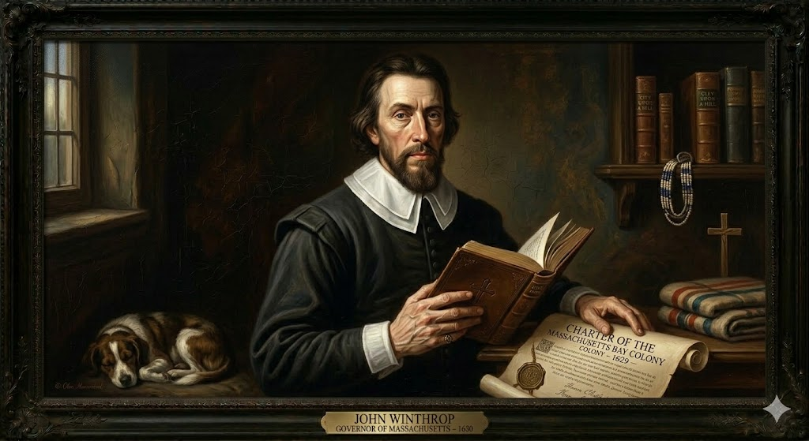
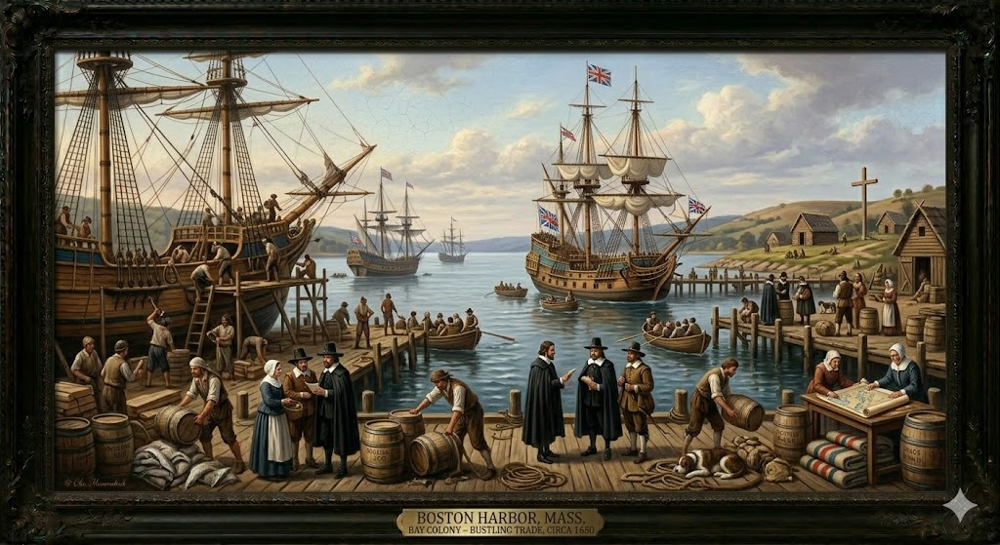

1. שנות פעילות, הקמה ויעדים
שנת הקמה: הזיכיון ניתן ב-1628, אך ההתיישבות המסיבית והקמת הממשל החלו בקיץ 1630 עם הגעת "צי וינתרופ" (11 ספינות נושאות כ-700 מתיישבים).
ישות מקימה: "חברת מפרץ מסצ'וסטס" (Massachusetts Bay Company). בניגוד לחברות אחרות, הפוריטנים רכשו את השליטה בחברה ולקחו את הצ'ארטר (מסמך הזיכיון המלכותי) איתם לאמריקה, מה שהבטיח להם עצמאות פוליטית ומשפטית מוחלטת מלונדון במשך עשרות שנים.
היעדים המקוריים (הגירה לעומת קולוניאליזם): המתיישבים במסצ'וסטס לא באו לחפש זהב כהרפתקנים (וירג'יניה) ולא באו כפליטים עניים (פלימות'). זו הייתה הגירה של משפחות ממעמד הביניים - סוחרים, עורכי דין וחקלאים מבוססים. מטרתם הייתה להקים מודל חברתי-דתי מושלם, מבוסס על משמעת קהילתית ברזל ומוסר עבודה פרוטסטנטי.
2. רקע המייסדים: ג'ון וינתרופ

ג'ון וינתרופ (John Winthrop) (1588–1649)
ילדות ומשבר אמוני: נולד למשפחת אצולה כפרית עשירה באנגליה. למד באוניברסיטת קיימברידג' - כור ההיתוך של המחשבה הפוריטנית. בשנות העשרים לחייו עבר משבר נפשי ורוחני, הרגיש כי אורח החיים החומרי באנגליה מושחת, ומצא נחמה רק בתיאולוגיה הפוריטנית המחמירה.
הישגים היסטוריים: כאשר החלו רדיפות פוריטנים באנגליה, וינתרופ ארגן את "ההגירה הגדולה". בעודו על אוניית הדגל "ארבלה" בלב אוקיינוס (1630), נשא את דרשתו המפורסמת וטבע את המונח "עיר על גבעה" (City upon a Hill) - החזון שעל אמריקה להיות חברת מופת מוסרית. כמושל (נבחר 12 פעמים), הוא בנה את התשתית החוקית של המושבה, אך גם גירש באכזריות כל מי שחלק על הדוקטרינה שלו (כמו רוג'ר ויליאמס ואן האצ'ינסון).
3. אידאולוגיה: פוריטניזם נוקשה
ישנו הבדל תהומי בין האידאולוגיה של מסצ'וסטס לזו של מושבת פלימות':
- תיקון מבפנים לעומת בריחה: הבדלנים (פלימות') פרשו מהכנסייה האנגליקנית וניתקו קשר. הפוריטנים (מסצ'וסטס) סירבו להיפרד ממנה; מטרתם הייתה "לטהר" (Purify) אותה משרידים קתוליים, ולקוות שאנגליה כולה תחקה את המודל שלהם שייבנה באמריקה.
- תאוקרטיה נוקשה: מסצ'וסטס לא הייתה דמוקרטיה חופשית, אלא תאוקרטיה שבה החוק האזרחי והדתי התמזגו. רק גברים שהוכרו כחברי כנסייה מלאים (שעברו "חווית ישועה" מוכחת) הורשו להצביע בבחירות למועצה המקומית.
- השכלה ככלי דתי: כדי למנוע מ"השטן הזקן" להרחיק אנשים מקריאת התנ"ך, הפוריטנים קבעו כי קרוא וכתוב היא חובה דתית עליונה. הם חוקקו את חוקי החינוך הציבורי הראשונים באמריקה והקימו ב-1636 את אוניברסיטת הרווארד (Harvard) כדי להכשיר כמרי כנסייה משכילים לעתיד המושבה.
4. גיאוגרפיה והידרולוגיה: נהר צ'ארלס ובוסטון
א. מערכת נהר צ'ארלס (Charles River)
מידע הידרולוגי: נהר קצר יחסית הזורם למפרץ בוסטון. בניגוד לזרמים האדירים של הג'יימס בוירג'יניה, נהר צ'ארלס מתאפיין בזרימה איטית ומתפתלת, ואגן הניקוז שלו כולל אגמים וביצות טבעיות המנקים את המים. השפך למפרץ יוצר נמל טבעי עמוק ומוגן היטב מסערות.
מחקר אטימולוגי של נהר צ'ארלס
- Quinobequin (שם מקורי): בשפת המסצ'וסט, משמעותו "מתפתל" או "מעגלי", המתאר את מסלולו הנחשי.
- Charles River (שם אנגלי): נקרא על ידי קפטן ג'ון סמית' ב-1614 לכבוד הנסיך (לימים המלך) צ'ארלס הראשון. מקור השם מהשפה הגרמאנית העתיקה (karl), שמשמעותה "אדם חופשי".
ב. מדוע נבחר חצי האי שומוט (בוסטון)?
צי וינתרופ התיישב תחילה בצ'ארלסטאון, אך מקורות המים שם היו גרועים. הם ניצלו מאסון בזכות מעבר מהיר לחצי אי סמוך בשם "שומוט" (Shawmut Peninsula), ששמו שונה לבוסטון.
- "המעיין הגדול" (The Great Spring): היתרון ההידרולוגי הדרמטי. חצי האי שפע נביעות מים מתוקים וטהורים שפרצו מהגבעות. מקור זה מנע לחלוטין את מחלות הדיזנטריה שחיסלו מושבות אחרות.
- הגנה טבעית: חצי האי חובר ליבשת באמצעות רצועת חול דקיקה ("The Neck"), מה שהפך אותו למבצר טבעי קל להגנה.
5. כלכלה ומערכת הסחר הימי

כלכלת מסצ'וסטס עוצבה על ידי חסרונותיה הגיאוגרפיים, שאילצו אותה לפנות אל הים:
- האדמה הסלעית: האדמה סביב מפרץ מסצ'וסטס הייתה סלעית ואקלים החורף היה ארוך. זה מנע הקמת מטעים ענקיים לגידול מסחרי (כמו טבק בדרום). החקלאות הייתה בעיקרה "חקלאות קיום" משפחתית (Subsistence farming).
- עושר הים - דיג וספינות: מכיוון שלא יכלו לייצא גידולים, הם פנו ל"מכרה הזהב" של האוקיינוס – הדיג. המים הקרים שפעו דגי בקלה (Cod). כדי לדוג ולייצא אותם, הם נזקקו לספינות. היערות העבותים סיפקו עץ איכותי, ותוך כמה עשורים הפכה בוסטון למרכז העולמי לבניית ספינות.
- הסחר המשולש (Triangular Trade): סוחרי מסצ'וסטס הפכו ל"מובילים" של האוקיינוס. הם ייצאו עץ ודגים לקריביים תמורת סוכר ומולסה, שאותה זיקקו בבוסטון לרום חריף שנשלח לאירופה או לאפריקה.
6. דמוגרפיה ומבנה חברתי: "ההגירה הגדולה"
הדמוגרפיה של מסצ'וסטס הייתה ייחודית במושגי המאה ה-17, ויצרה את החברה היציבה ביותר באמריקה:
- הגירת משפחות ענקית: תופעת "ההגירה הגדולה" התרחשה בין 1630 ל-1640. כ-20,000 פוריטנים עזבו את אנגליה למסצ'וסטס. בניגוד לוירג'יניה, לכאן הגיעו משפחות גרעיניות שלמות עם ילדים, מה שהבטיח ילודה מהירה וצמיחה דמוגרפית יציבה.
- תוחלת חיים פלאית: האקלים הקר והמים הטהורים של חצי האי בוסטון מנעו מחלות קטלניות. תוחלת החיים של פוריטני במסצ'וסטס הגיעה בממוצע לגיל 70, גבוה ב-10 שנים מבאנגליה, וב-20 שנים מווירג'יניה.
- מבנה הקהילה הצפוף (Town System): מסצ'וסטס נבנתה בשיטת העיירות. כל קהילה הקימה עיירה צפופה, כשבמרכזה בית האסיפה (Meetinghouse) ששימש ככנסייה וכבניין עירייה. הדבר איפשר שליטה מוסרית חברתית הדוקה על התנהגות השכנים.
7. מאבקי השליטה: הדומיניון ומרד בוסטון
העצמאות הפוריטנית המוחלטת של מסצ'וסטס הייתה לצנינים בעיני הכתר הבריטי, מה שהוביל להתנגשות חזיתית וביטול הממשל:
אובדן הזיכיון ו"דומיניון ניו אינגלנד"
- מועדי המאבק: 1684 (ביטול הזיכיון המקורי), 1689 (מרד בוסטון), ו-1691 (קבלת זיכיון מלכותי חדש).
- אישים בולטים: המלך צ'ארלס השני ואחיו ג'יימס השני, המושל העריץ סר אדמונד אנדרוס (Andros), וצמד המנהיגים הפוריטנים החזקים אינקריס וקוטון מאת'ר (Mather).
- מהלך המאבקים: במשך עשרות שנים מסצ'וסטס התנהלה כמעט כמו מדינה עצמאית, סירבה לאפשר חופש דת לאנגליקנים, ואף סירבה לציית לחוקי הסחר של הכתר. בתגובה, בשנת 1684, המלך צ'ארלס השני ביטל לחלוטין את הזיכיון שלהם. אחיו, המלך הקתולי ג'יימס השני, הלך צעד רחוק יותר וב-1686 מיזג את מסצ'וסטס עם שאר המושבות בצפון לישות דיקטטורית עצומה בשם דומיניון ניו אינגלנד, ומינה את אדמונד אנדרוס למושל עליון. אנדרוס הנהיג משטר אימה: הוא ביטל את אסיפות העיירה (לב הדמוקרטיה הפוריטנית), הטיל מיסים ללא אישור, וכפה עריכת טקסים אנגליקניים בתוך הכנסיות הפוריטניות. כשהגיעה לאמריקה הבשורה על "המהפכה המהוללת" באנגליה (הדחת ג'יימס השני ב-1688), תושבי בוסטון הזועמים יצאו לרחובות באפריל 1689. הם פתחו במרד חמוש, כיתרו את אנדרוס, וכלאו אותו. למרות המרד המוצלח, השלטון החדש בלונדון לא החזיר להם את התאוקרטיה הישנה. ב-1691 הוענק זיכיון מלכותי חדש: מסצ'וסטס הפכה למושבת כתר רשמית, מוזגה עם מושבת פלימות', וחשוב מכל - זכות ההצבעה שונתה מדרישה ל"חברות בכנסייה" לדרישת "בעלות על רכוש", צעד שסיים את השליטה המוחלטת של הכמרים הפוריטנים.
8. מחקר אטימולוגי: המושבה Massachusetts
Mass (מאס)
מקור: שפת המסצ'וסטנגזר מהמילה Massa או Missi. משמעותו היא "גדול" (Great) או רחב ממדים.
adchu (אדצ'ו)
מקור: שפת המסצ'וסטנגזר מהמילה Wadchu. משמעותו "הר" (Mountain) או גבעה נישאה ובולטת בנוף.
-s / -et (ס / אט)
מקור: סיומות דקדוקיותהאות "s" משמשת כסיומת הקטנה או ריבוי (שרשרת גבעות), בעוד הסיומת "et" (או ut) היא סיומת מיקום נפוצה שמשמעותה "במקום של-" או "לצד".
Massachusetts (מסצ'וסטס)
חיבור כל המרכיבים (Massa-adchu-s-et) יוצר את המשמעות המלאה והציורית: "במקום של הגבעה הגדולה".
הגבעה המדוברת היא רכס "הגבעות הכחולות" (Great Blue Hill) הממוקם מעט מדרום לבוסטון של ימינו. רכס זה היה בולט מאוד בנוף ושימש כנקודת ציון חשובה לניווט, הן עבור השבטים המקומיים והן עבור יורדי הים האירופאים שהתקרבו אל המפרץ.